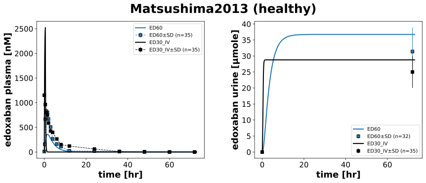
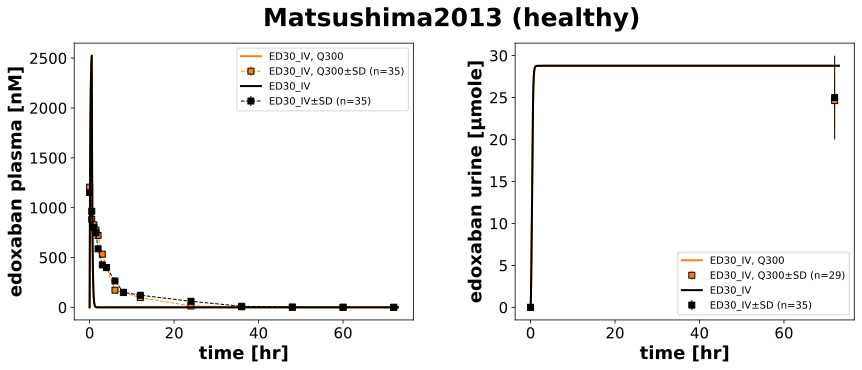
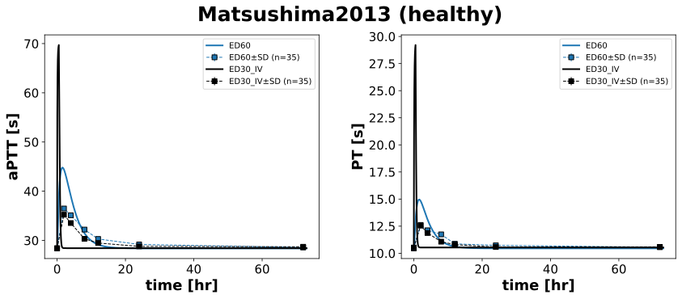
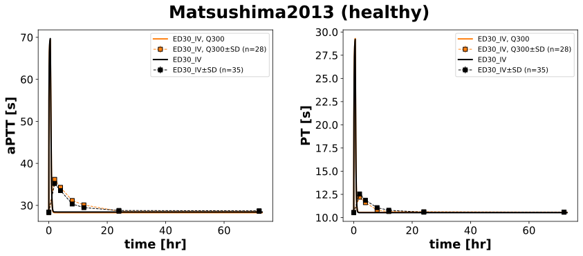

|  |
|  |
|  |
|  |
../../../../src/pkdb_models/models/edoxaban/experiments/studies/matsushima2013.py
from typing import Dict
from sbmlsim.data import DataSet, load_pkdb_dataframe
from sbmlsim.fit import FitMapping, FitData
from sbmlutils.console import console
from pkdb_models.models.edoxaban.experiments.base_experiment import (
EdoxabanSimulationExperiment,
)
from pkdb_models.models.edoxaban.experiments.metadata import Tissue, Route, Dosing, ApplicationForm, Health, Health, \
Fasting, EdoxabanMappingMetaData, Coadministration
from sbmlsim.plot import Axis, Figure
from sbmlsim.simulation import Timecourse, TimecourseSim
from pkdb_models.models.edoxaban.helpers import run_experiments
class Matsushima2013(EdoxabanSimulationExperiment):
"""Simulation experiment of Matsushima2013."""
#fraction_absorbed = {"Fasting": EdoxabanSimulationExperiment.fasting_map["fasted"]}
colors = {
"ED60": "tab:blue",
"ED30_IV, Q300": "tab:orange",
"ED30_IV": "black",
}
interventions = list(colors.keys())
pts = {
"ED60": 10.45,
"ED30_IV": 10.53,
"ED30_IV, Q300": 10.56
}
aptts = {
"ED60": 28.38,
"ED30_IV": 28.42,
"ED30_IV, Q300": 28.27
}
doses = {
"ED60": 60,
"ED30_IV": 30,
"ED30_IV, Q300": 30
}
infos_pk = {
"[Cve_edo]": "edoxaban",
"Aurine_edo": "edoxaban_urine",
}
infos_pd = {
"aPTT": "aPTT",
"PT": "PT"
}
def datasets(self) -> Dict[str, DataSet]:
dsets = {}
for fig_id in ["Fig1", "Fig2", "Tab1A"]:
df = load_pkdb_dataframe(f"{self.sid}_{fig_id}", data_path=self.data_path)
for label, df_label in df.groupby("label"):
dset = DataSet.from_df(df_label, self.ureg)
if label.startswith("edoxaban"):
dset.unit_conversion("mean", 1 / self.Mr.edo)
dsets[label] = dset
return dsets
def simulations(self) -> Dict[str, TimecourseSim]:
Q_ = self.Q_
tcsims = {}
for intervention in self.interventions:
# dose = self.doses[intervention]
if intervention.startswith("ED60"):
tcsims[f"{intervention}"] = TimecourseSim(
[Timecourse(
start=0,
end=73 * 60, # [min]
steps=800,
changes={
**self.default_changes(),
# no bodyweights
"PODOSE_edo": Q_(60, "mg"),
"PT_ref": Q_(self.pts[intervention], "s"),
"aPTT_ref": Q_(self.aptts[intervention], "s"),
},
)]
)
else:
tcsims[f"{intervention}"] = TimecourseSim(
[Timecourse(
start=0,
end=30, # [min]
steps=800,
changes={
**self.default_changes(),
# no bodyweights
"Ri_edo": Q_(30, "mg")/Q_(30, "min"),
"PT_ref": Q_(self.pts[intervention], "s"),
"aPTT_ref": Q_(self.aptts[intervention], "s"),
},
),
Timecourse(
start=0,
end=73 * 60 - 30, # [min]
steps=800,
changes={
"Ri_edo": Q_(0, "mg/min"),
},
)
]
)
return tcsims
def fit_mappings(self) -> Dict[str, FitMapping]:
mappings = {}
for intervention in self.interventions:
# PK
for ks, sid in enumerate(self.infos_pk):
name = self.infos_pk[sid]
mappings[f"fm_{name}_{intervention}"] = FitMapping(
self,
reference=FitData(
self,
dataset=f"{name}_{intervention}",
xid="time",
yid="mean",
yid_sd="mean_sd",
count="count",
),
observable=FitData(
self, task=f"task_{intervention}", xid="time", yid=sid,
),
metadata=EdoxabanMappingMetaData(
tissue=Tissue.URINE if "urine" in name else Tissue.PLASMA,
route=Route.PO,
application_form=ApplicationForm.TABLET,
dosing=Dosing.SINGLE,
#quinidine= True if "Q300" in intervention else False,
health=Health.HEALTHY,
fasting=Fasting.FASTED,
coadministration=Coadministration.NONE
),
)
# PD
for ks, sid in enumerate(self.infos_pd):
name = self.infos_pd[sid]
mappings[f"fm_{intervention}_{name}"] = FitMapping(
self,
reference=FitData(
self,
dataset=f"{name}_{intervention}",
xid="time",
yid="mean",
yid_sd="mean_sd",
count="count",
),
observable=FitData(
self, task=f"task_{intervention}", xid="time", yid=sid,
),
metadata=EdoxabanMappingMetaData(
tissue=Tissue.PLASMA,
route=Route.PO,
application_form=ApplicationForm.SOLUTION if "IV" in intervention else ApplicationForm.TABLET,
dosing=Dosing.SINGLE,
#quinidine=True if "Q300" in intervention else False,
health=Health.HEALTHY,
fasting=Fasting.FASTED,
coadministration=Coadministration.NONE
),
)
return mappings
def figures(self) -> Dict[str, Figure]:
return {
**self.figure_pk(),
**self.figure_pd()
}
def figure_pk(self) -> Dict[str, Figure]:
figures = {}
for subset in ["no-ddi", "ddi"]:
fig = Figure(
experiment=self,
sid=f"Fig1_{subset}",
num_cols=2,
name=f"{self.__class__.__name__} (healthy)",
)
plots = fig.create_plots(
xaxis=Axis(self.label_time, unit=self.unit_time), legend=True
)
plots[0].set_yaxis(self.label_edo_plasma, unit=self.unit_edo)
plots[1].set_yaxis(self.label_edo_urine, unit=self.unit_edo_urine)
for intervention in self.interventions:
if subset == "no-ddi" and "Q300" in intervention:
continue
elif subset == "ddi" and "ED60" in intervention:
continue
for ks, sid in enumerate(self.infos_pk):
name = self.infos_pk[sid]
# simulation
plots[ks].add_data(
task=f"task_{intervention}",
xid="time",
yid=sid,
label=intervention,
color=self.colors[intervention],
)
# data
plots[ks].add_data(
dataset=f"{name}_{intervention}",
xid="time",
yid="mean",
yid_sd="mean_sd",
count="count",
label=intervention,
color=self.colors[intervention],
linestyle="" if "urine" in name else "--",
)
figures[fig.sid] = fig
return figures
def figure_pd(self) -> Dict[str, Figure]:
figures = {}
for subset in ["no-ddi", "ddi"]:
fig = Figure(
experiment=self,
sid=f"Fig2_{subset}",
num_cols=2,
name=f"{self.__class__.__name__} (healthy)",
)
plots = fig.create_plots(
xaxis=Axis(self.label_time, unit=self.unit_time),
legend=True,
)
plots[0].set_yaxis(self.labels["aPTT"], unit=self.units["aPTT"])
plots[1].set_yaxis(self.labels["PT"], unit=self.units["PT"])
for intervention in self.interventions:
if subset == "no-ddi" and "Q300" in intervention:
continue
elif subset == "ddi" and "ED60" in intervention:
continue
for ks, sid in enumerate(self.infos_pd):
name = self.infos_pd[sid]
# simulation
plots[ks].add_data(
task=f"task_{intervention}",
xid="time",
yid=sid,
label=intervention,
color=self.colors[intervention],
)
# data
plots[ks].add_data(
dataset=f"{name}_{intervention}",
xid="time",
yid="mean",
yid_sd="mean_sd",
count="count",
label=intervention,
color=self.colors[intervention],
)
figures[fig.sid] = fig
return figures
if __name__ == "__main__":
run_experiments(Matsushima2013, output_dir=Matsushima2013.__name__)
{kind=link}
{kind=link}
{kind=link}
{kind=link}